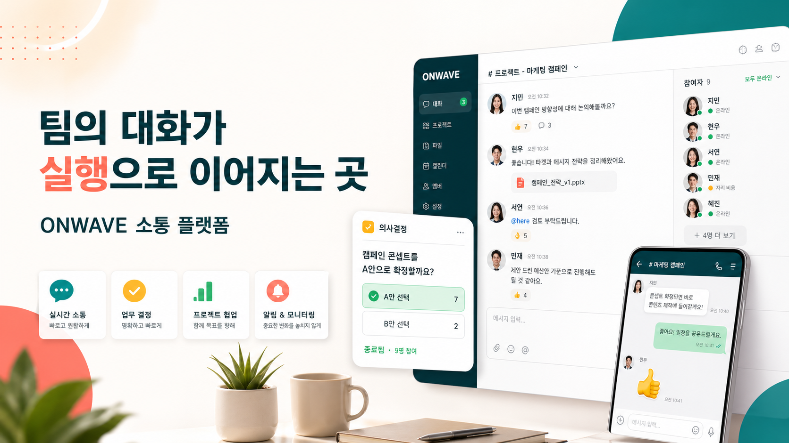
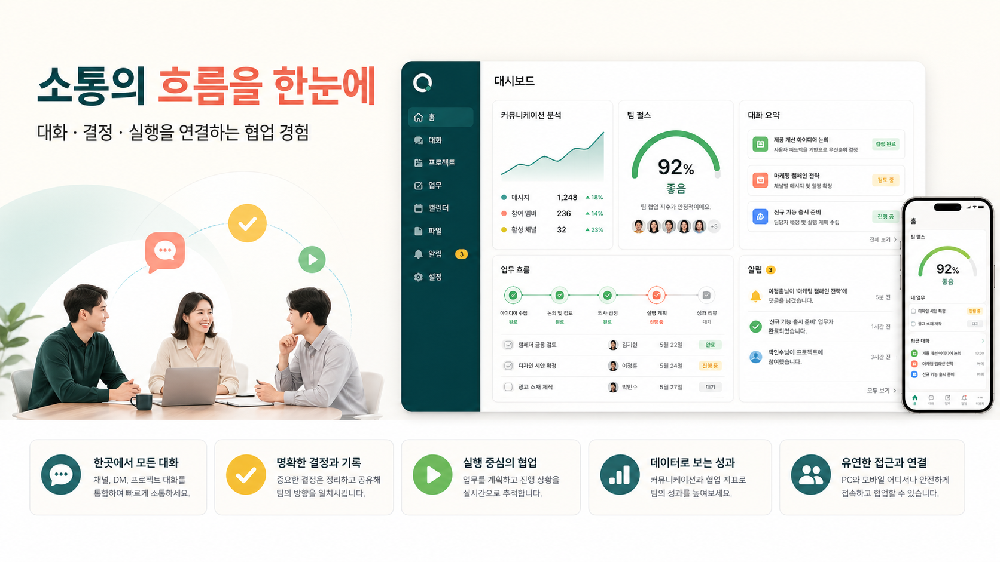
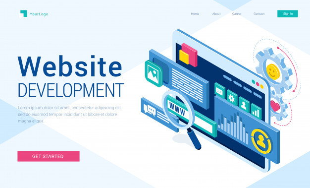

Project
시장 배경, 문제 정의, 사용자 시나리오, 핵심 기능을 중심으로 서비스가 왜 필요한지 설명합니다.
기획 과정 보기Communication Platform Portfolio
ONWAVE는 흩어진 대화와 결정을 한곳에 모아 팀의 협업 흐름을 선명하게 보여주는 웹 서비스 포트폴리오입니다. 밝은 연갈색 톤과 제품형 UI 이미지를 활용해 실제 서비스 소개 페이지처럼 구성했습니다.

Visual Concept
메인 배너, 대시보드 배너, 웹 개발 레퍼런스 이미지를 함께 사용해 서비스 기획부터 화면 설계까지 이어지는 흐름을 보여줍니다.


Overview
Service Value
채널별 대화, 질문 큐, 빠른 투표, 결정 카드, 업무 연결 기능을 통해 팀이 놓치기 쉬운 협업 맥락을 기록하고 다음 행동으로 이어줍니다.
Quick Preview
문제 정의, 목표 사용자, 서비스 구조를 단계별로 보여줍니다.
대시보드, 모바일 화면, 카드 컴포넌트를 제품처럼 정리합니다.
업데이트 일정과 활용 사례를 카드 뉴스 느낌으로 구성합니다.